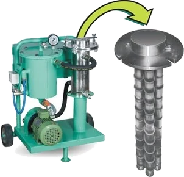
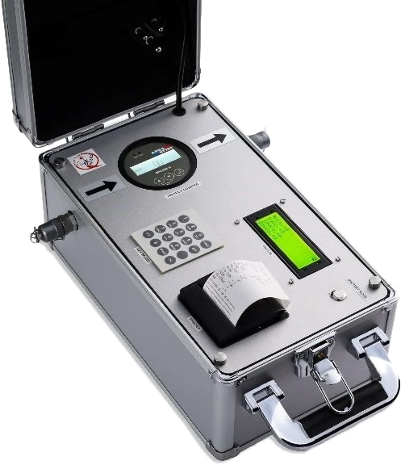
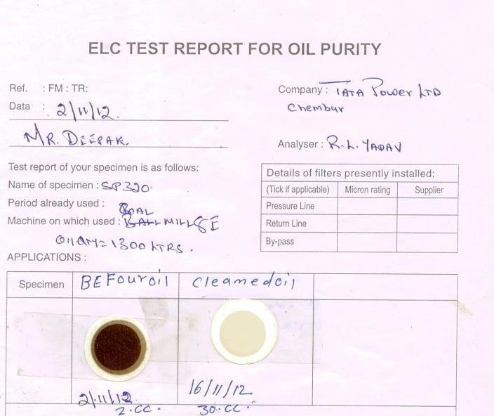
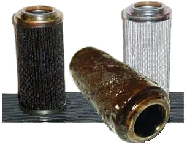

ELC Series

Electrostatic Liquid Cleaners
Sub-micron cleaning without touching the oil's chemistry
1 µ & belowRemoves sludge & varnishIoT / MODBUS ready
9 models
Details
Navigate
HomeCompanyProductsServicesIndustriesContactProduct families
Electrostatic Liquid CleanersLow Vacuum DehydrationIntegrated Clean & DehydrateHydraulic Oil FiltrationOil Filtration Plants2-Stage & 3-Stage FiltrationGearbox Oil FiltrationCoolant FiltrationCondition MonitoringOil Testing KitsConsumables & SteelsReach us
+91 20 4603 3076 info@ferrocare.comS. No. 32/3/8, Yewlewadi Road,
Kondhwa Budruk, Pune – 411048
Maharashtra, India
Every machine Ferrocare manufactures, with the model designations and published specifications. Filter by discipline, or search by model number.
Showing 11 families · 62 models
Sub-micron cleaning without touching the oil's chemistry

100 % free water and emulsified moisture, removed

Electrostatic cleaning and vacuum dehydration in one machine

Portable, trolley and inline solid removal

Skid-mounted systems for the heavy end of the plant
Each element does one job, so all of them last longer

Attach to the gearbox, lift the carbon out
Built for grinding — where swarf never stops coming

Measure the oil instead of guessing about it

A laboratory verdict, from a bench in the plant

The parts that keep a filtration programme running
No families match that search. Try a model number such as ELC 100, LVDH 600 or OPCOM.
Pick the fluid you run and the contamination you are seeing. This is the short version of how a Ferrocare engineer narrows the range — the real sizing happens against your duty point.
Contamination type decides the machine. This is the short version of how the range divides up.
| Problem | Family | What it does |
|---|---|---|
| Fine solid particles below filter rating | Electrostatic Liquid Cleaners (ELC) | Charged electrodes collect suspended particles to 1 micron and below. |
| Sludge and varnish build-up | Electrostatic Liquid Cleaners (ELC) | Sludge and varnish are collected on the pleated media — mechanical filters pass them. |
| Free and emulsified water | Low Vacuum Dehydration (LVDH) | Vacuum and heat flash moisture off, down to 10–20 ppm final water. |
| Dissolved gas in turbine or EH oil | Low Vacuum Dehydration — degassification models | LVDH 900 and larger remove entrained gas along with moisture. |
| Bulk solid contamination in a reservoir | Hydraulic & Lube Oil Filtration Machines | Magnetic pre-straining plus multi-stage cartridge filtration, offline. |
| Gearbox sump carbon deposits | Gear Box Oil Filtration Systems | Direct-coupled unit lifts carbon out of the sump while running. |
| Water-glycol or FRF hydraulic fluid | Oil Filtration Plants & Units | Purpose-built units at 75 LPM / 16 bar for high-water-content fluid. |
| Abrasive fines in grinding coolant | Coolant Filtration Systems | 400 LPM central filtration protecting surface finish. |
| Unknown oil condition | Condition Monitoring Instruments | Particle counters, cleanliness monitors and moisture sensors. |
| Routine field assessment | Oil Testing Kits | Patch tests and chemical kits for water, particles, TAN and acidity. |
Send the fluid type, reservoir volume and the contamination you are seeing. We will tell you which machine — or which combination — actually addresses it.